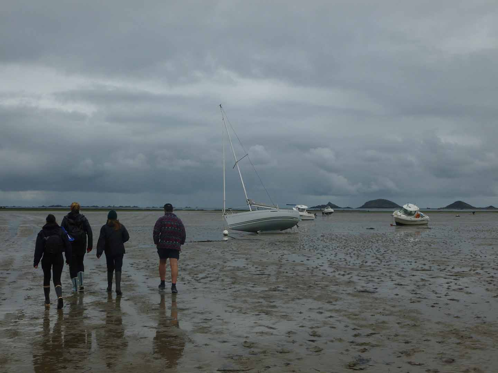
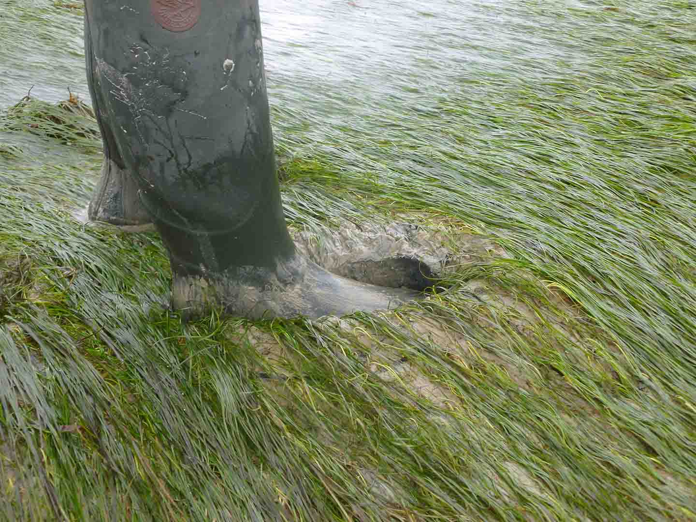
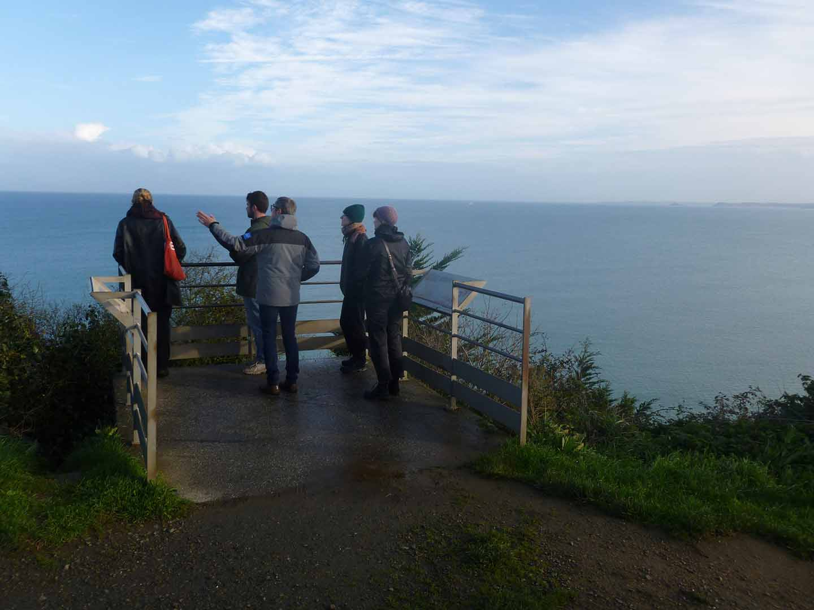
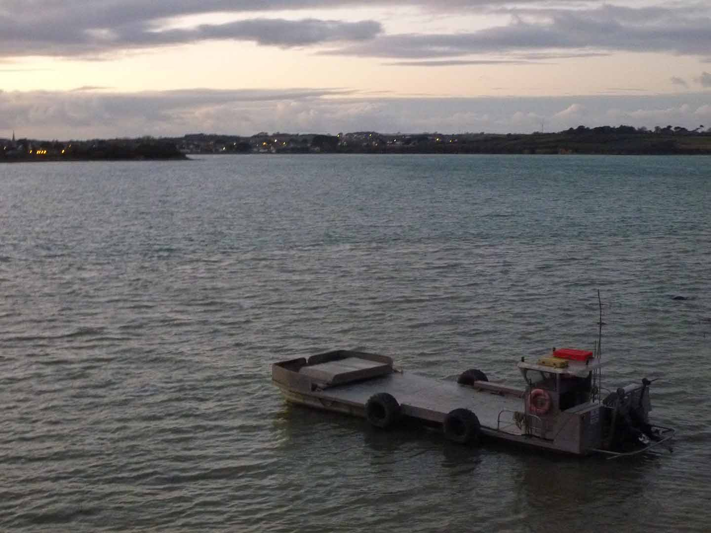
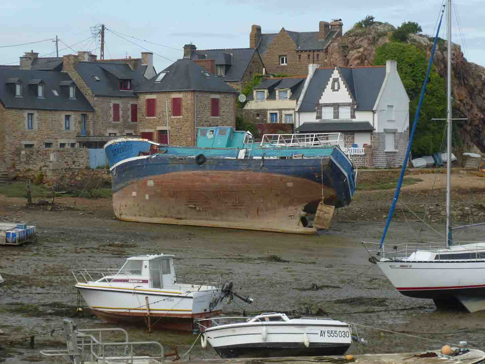

Design des Mondes Littoraux
2024-2025
Programme Design des Territoires
Antenne Design des Mondes Littoraux
Avec :
Adèle Lebaudy
Alva Cederbygd
Christiane Pit
Marion Caroff
Nathaël Ayrault
Participation au programme Design des Territoires, sur l'antenne Design des Mondes Littoraux. Les projets arrivent bientôt sur le site !





Site conçu par Amaury Hardré, 2024


à propos